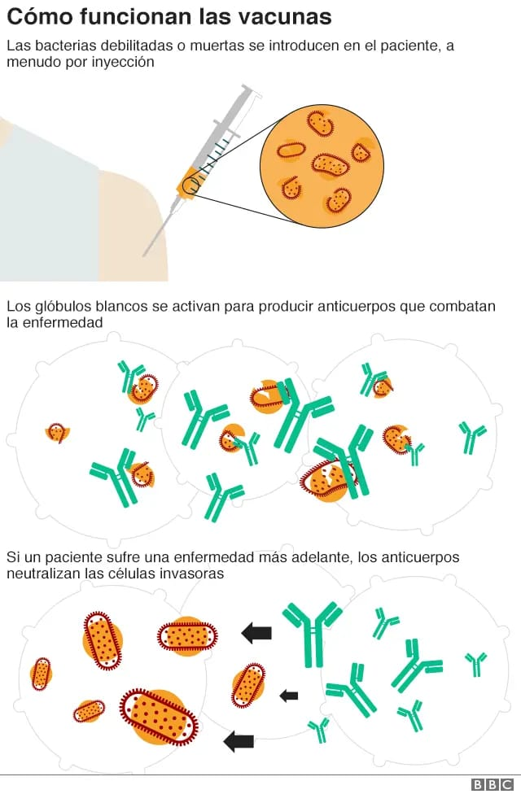

Las vacunas exponen de forma controlada al sistema inmunitario a un antígeno, desencadenando una respuesta primaria y generando células de memoria que protegen frente a futuras infecciones. Las vacunas introducen en el organismo un antígeno —virus o fragmento proteico, inactivado o sintético— que simula la presencia del patógeno sin causar la enfermedad. En la respuesta primaria, el sistema inmunitario reconoce ese antígeno como extraño y los linfocitos B producen anticuerpos específicos que neutralizan el agente infeccioso. Después de la “infección” simulada, el cuerpo genera células de memoria que permanecen en circulación y permiten que, en un segundo contacto con el patógeno real, la respuesta sea más rápida y potente, impidiendo o atenuando la enfermedad significativamente.
Cuando la vacuna se administra, las células presentadoras de antígenos (macrófagos, células dendríticas y linfocitos B) ingieren el antígeno, lo procesan y lo presentan en su superficie mediante moléculas del Complejo Mayor de Histocompatibilidad. Estas células activan a los linfocitos T colaboradores, que coordinan la producción de anticuerpos por parte de los linfocitos B y la acción citotóxica de los linfocitos T. Muchos preparados incluyen adyuvantes, sustancias que potencian localmente la respuesta inmunitaria al crear un microambiente inflamatorio que atrae más células defensivas. Gracias a este proceso, se establece una memoria inmunológica robusta y duradera que asegura protección ante exposiciones posteriores al mismo patógeno.
